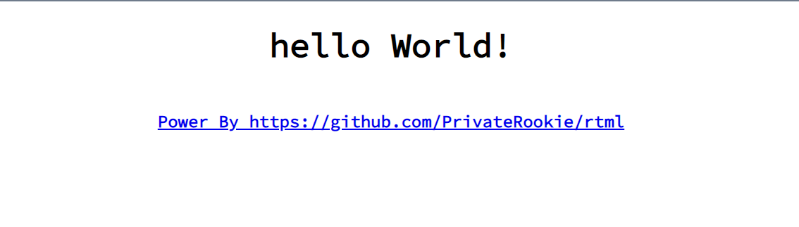

rtml 更新
新的项目管理工具 cargo-rtml
为了方便用户快速开始 rtml 项目, 减少对 python -m http.server 的第三方命令依赖以及支持自动重载, rtml 项目提供了一个命令行管理工具 cargo-rtml.
用户可以通过以下命令进行安装
cargo install -f --git https://github.com/PrivateRookie/rtml.git cargo-rtml
接着用户可以通过 cargo-rtml --help 查看所有可用命令. 根据 Cargo 插件协议, cargo-xxx 形式的命令可以用 cargo xxx 形式调用, 可惜的是 clap v3.0 的子命令解析与 Cargo 插件协议冲突, 必须等到该 bug 修复才能通过 "cargo rtml".
与 cargo new 类似
cargo-rtml new <项目路径> --name <项目名>
可以用来创建一个新项目.
为了将 rtml 项目编译为 wasm 文件, 需要运行以下命令
rustup target add wasm32-unknown-unknown
cargo install -f wasm-bindgen-cli
接着进入创建好的项目根目录, cargo-rtml build 将会编译整个项目, 并将文件放在 target/dist 目录下.
或者运行 cargo-rtml dev -w 100 启动 dev server, 加上 -w 参数将会在文件改变后自动重新编译并重载浏览器页面.
接着在浏览器打开 http://127.0.0.1:9001/ 就可以看到以下页面

辅助宏更新
rtml 加入了 html 标签同名的宏(如 input!, p! 等), 但因为目前 rust 会将项目导出宏放在顶层模块, 这些标签同名宏与之前的 attr!, subs! 宏容易混淆. 所以最近 rtml 对 attr 等宏进行重命名, 具体如下
- attr -> t_attr, 表示 tag attr, 与 s_attr(static tag attr) 对应, 语法不变
- style -> t_style, 含义变更与 attr 类似
- update -> ref_update, 用于注册响应式数据的变更函数, 具体用法见下面介绍
- subs -> ref_subs, 用于订阅响应式数据, 生成标签内容, 动态属性, 动态样式和修改 html 本身, 具体用法加下
ref_update
这个宏的目的和设计思考可以在专栏文章闭包自动克隆捕获的变量看到, 以下仅介绍用法.
用户常常需要在某个 html 元素的事件被触发时对一些数据进行修改, 这时候用户可以通过 ref_update 声明捕获的响应式数据, 接着进行操作, 最后返回布尔值告诉 rtml 是否应该刷新订阅这些数据 html 标签.
#![allow(unused)] fn main() { let count = 0usize.reactive(); // 宏的第一部分是要捕获的响应式数据, 可以捕获多个, 用"," 分割 // 宏的第二个参数是一个返回值为 bool 的 expr block, 用户可以在 // 这个块里操作数据 let on_click = ref_update!(count { // 加1并明确刷新 *count.val_mut() += 1; true }) // 有时候还需要 event 参数, 这时候只需要稍微改变宏的第二个参数即可 let with_event = ref_update!(count => |evt| { .... }); }
ref_subs
ref_subs 宏用于根据响应式数据
- 生成标签内容
- 生成标签属性
- 生成标签样式
- 修改 html 元素
并在数据更新时自动更新这些订阅的内容.
ref_subs 使用方式与 ref_update 类似, 最开始都是声明捕获的响应式数据
生成标签内容
#![allow(unused)] fn main() { let count = 0usize.reactive(); let display = ref_subs!(count => format!("count is {}", count.val())) }
生成标签属性
把 => 换成 #>, 后面属性语法与 t_attr 相同.
#![allow(unused)] fn main() { let hidden = true.reactive(); let card_attr = ref_subs!(hidden #> class="card", hidden=hidden.val()); }
生成标签样式
把 => 换成 *>, 后面属性语法与 t_style 相同.
#![allow(unused)] fn main() { let err = true.reactive(); let msg_style = ref_subs!(err *> text-color: if err.val() {"red"} else {"green"}; font-size: "bold"; ); }
修改 html 元素
有时候仅仅是修改属性, 样式还不够, 在表单里, 有时候需要在数据变动时通过 set_value 修改某个控件值, ref_subs 提供了数据变动时拿到 html 元素并根据需要修改的能力.
把 => 换成 :>, 后面跟着一个接受一个 Element 参数的闭包.
#![allow(unused)] fn main() { let name = String::new().reactive(); let update_name = ref_subs!(name :> |ele| { let input: HtmlInputElement = JsValue::from(ele).into(); input.set_value(&name.val()); }); }
标签同名宏
除了标签同名函数, 最近 rtml 也为每个标签提供一个同名宏, 用户可以通过一个宏即可完成设置标签属性, 样式, 监听数据变动, 设置标签内容.
#![allow(unused)] fn main() { div!{ // 与 ref_subs 类型, # 后跟着以大括号包围的元素标签 // 属性之间不需要分割符, 方便从 html 文件中粘贴复制 {id="card" class="xxxx"} } let count = 0.reactive(); div!{ // # 之后可以加上订阅的响应式数据, 多个数据以 "," 分割 count { data-x-count = count.val() } } div!{ {id="demo"} // * 用于定义样式, 与属性类似, * 符号后也可以增加订阅的数据 * {font-size: "bold"; text-color: "red" } // @<事件类型> 用于添加事件绑定, 接着是 "=" 和订阅的数据, "=>" 后的匿名函数要求与 ref_update 相同. @click = count, age => |evt| { .... } // || 跟着一个表达式, 表达式返回值应该是一个实现 Into<EleContent> 类型 // 两个竖线之间可以放置订阅数据 如 |count, name| format!("count: {}" count.val()) || "wow" } }
实际使用样例可以查看 rtml 中的 macro_style
双向数据绑定
同样在 form 例子中有可以看到, 请查阅 func_style
github page/action 集成
可以查看 rtml-page-demo 项目.
项目在线 page 网址为page